Context
Delievered as part of the Physical Computing & Interaction Design Studio course at UQ, the project brief required us to generate physical computing concepts that explore playful & open-ended interactions in everyday life, working within their chosen theme and domain. We were supposed to follow an iterative process to design and develop this concept for final delivery at the end-of-semester exhibition.
Description
Fittable is a smart table top that allows user to develop good study habits to support good posture through positive reinforcement. The product uses an interactive token system to encourage students to stretch and take active breaks while studying. The activity meter on table top encourages movement by providing real time feedback on current postural status. It is designed for students who are a particularly high-risk group for sedentary behaviour, which can have negative long-term health consequences.
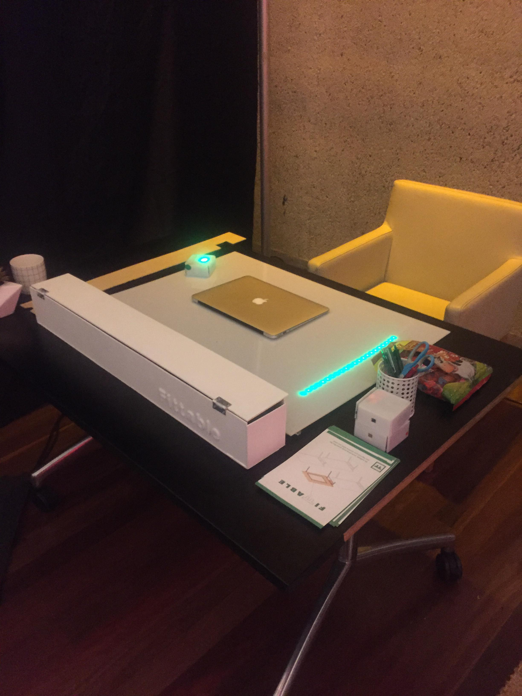
The use of Fittable is simple and easy to use. Before you begin your study session, place a small stack of tokens around your study space. For example, you may place one on your bed or on on a shelf. After you finish placing them up, you may start studying! The closest of these tokens will light up when you should take an active break, which signals that you should pick it up and put it on the table. The tabletop activity meter will change according to how active your movement is. When the tabletop senses inactivity the bar will stop growing and the tabletop will vibrate to notify that you should shift your body position to participate in an active break.
Design Process
Ideation
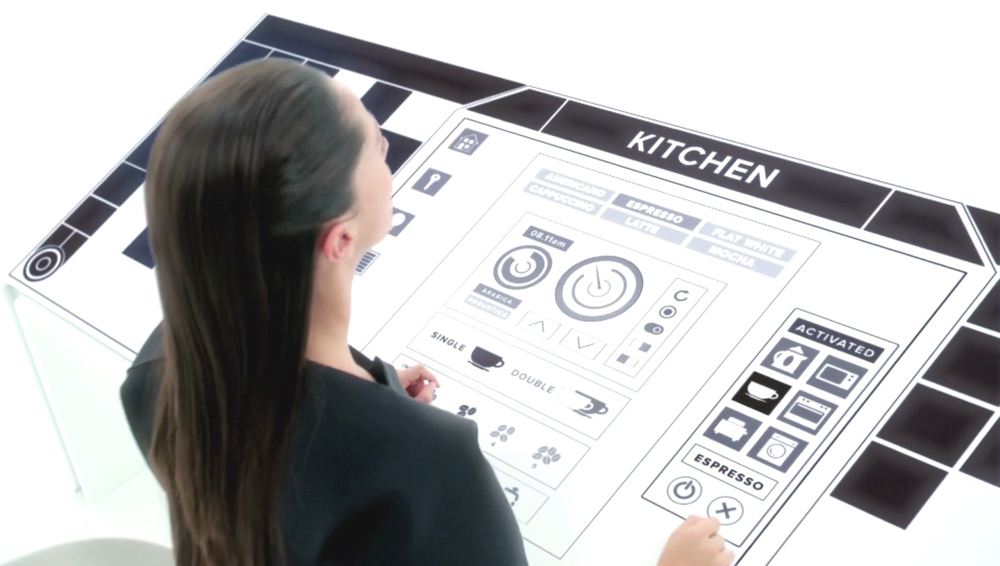 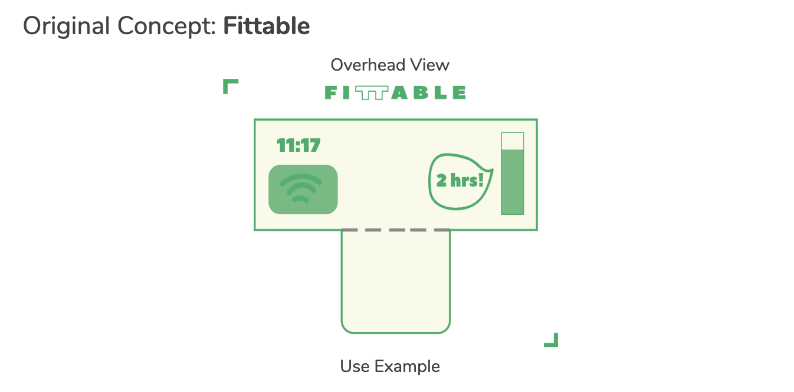Once the team decided to explore the posture as our project theme, I came up with this idea of a Smart desk, that detects your leg-crossing habits and reminds you to sit up straight while you study. The idea was inspired by a Netflix series called ‘Black Mirror’. In the White Christmas episode, a character uses a smart table to control anything including lights and toaster in her household using the touch screen. Smart desk was not something that is actively developing in the industry and I thought having a display on your own table would look so cool. By extending the idea of standing desk, I thought this could be a relevant concept as sitting on your desk for long amount time has significant impact on your back and neck bone health. I designed the initial UI of the product including the activity meter and real time notifications. The concept kept being modified and evolved through the project and ended up with the form of Smart table-top and tokens.
Product Design and Construction
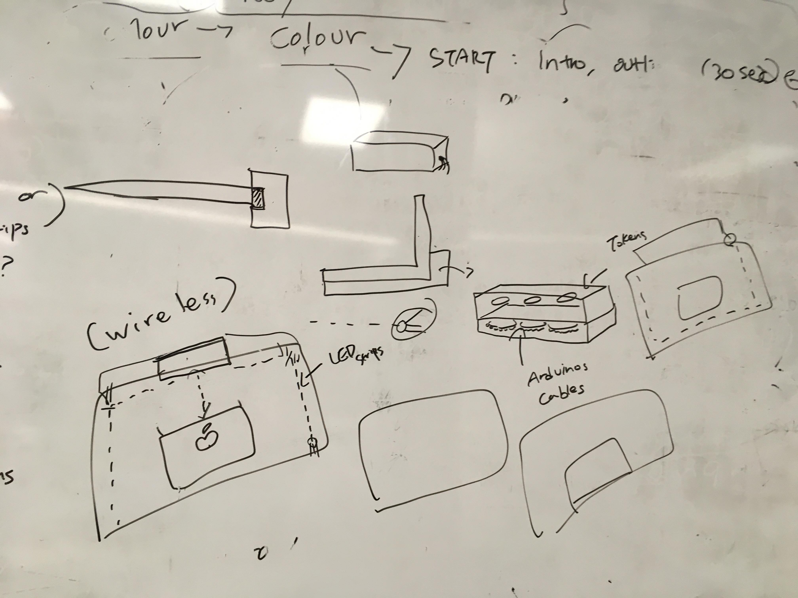 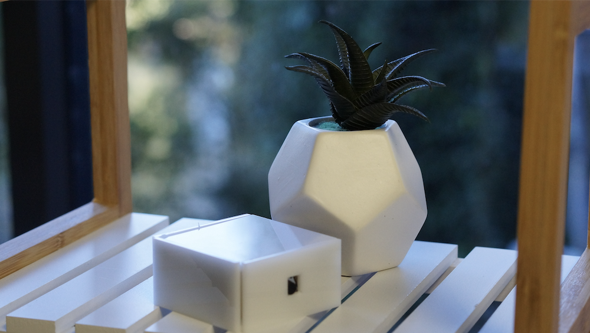 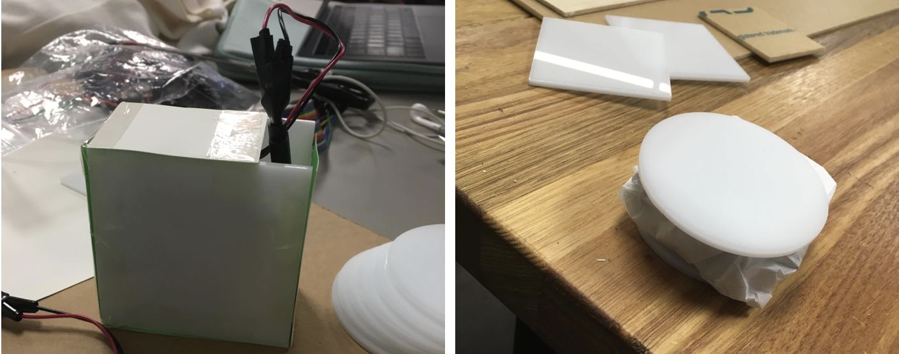 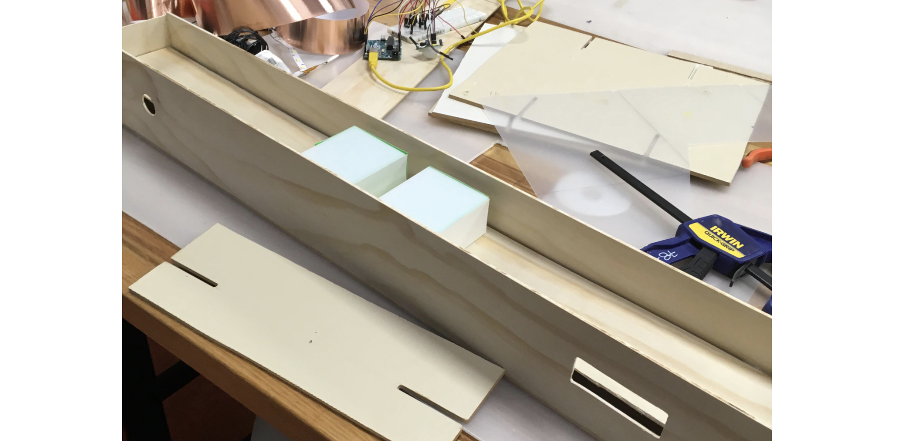
The part I participated the most was the tokens.
The original design of tokens were basically a game tokens that are slightly
thicker than Oreos to store neopixels inside. However, we also had to store
the ESP32 as well as batteries so the round-shaped acrylics were not sufficient
to fit all these items inside. Hence, I had to redesign and make several prototypes
before making the final version. Using square-shaped acrylic pieces, cardboards and
coated paper, I made versions of square-shaped tokens. Since the lines
associated with battery and boards would not fit inside the token, I
left tiny hole at the top to let them go. After I checked the prototypes
look compact and decent enough, I built more polished version of
them using additional acrylic pieces and hot glue. The outcome looked
pretty good and all the neopixel rings, batteries and ESP32 fitted inside perfectly.
The developed a wooden box that sits on the tabletop.
The box had to be big and wide enough to fit
within the tabletop and able to store all the arduino cables and boards inside as well as the tokens.
Based on the design, I built a long box using 10cmX10cm wood pieces and hot glue gun.
We then had to cut another wood piece to create a layer that fits inside the box,
so we can separate the arduino cables and tokens.
W had to cut additional parts off the layer, to fit the PIR
motion sensor and LCD screens. The last step for the box was to
paint with white spray paints which matches the colour of the table top and tokens.
Graphic Design & Product Branding
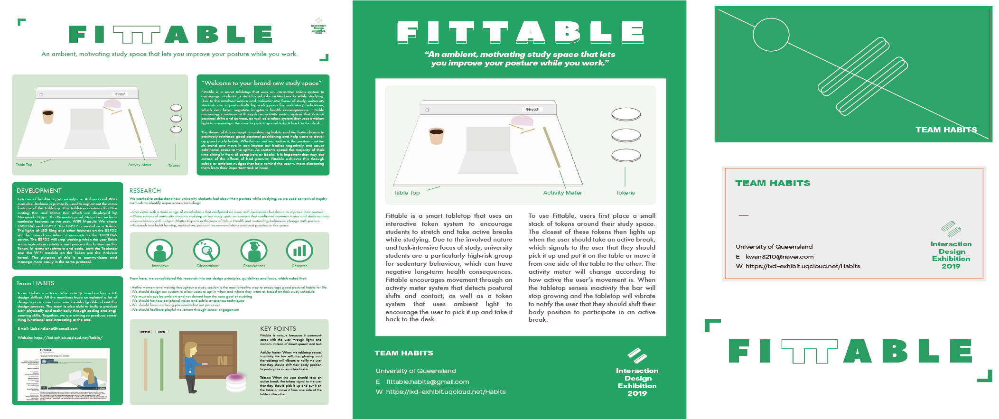 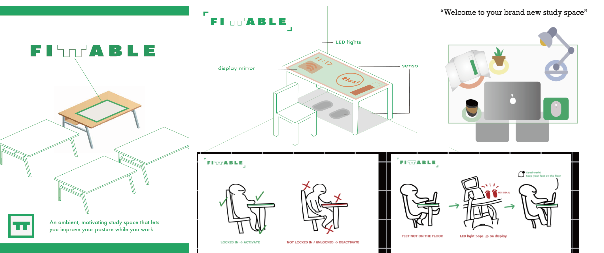 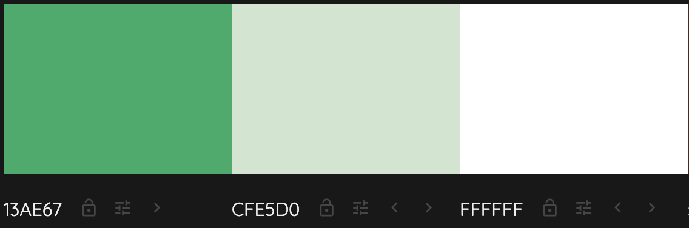 I contributed a large portion of the graphic design and product branding work for this project.
For the brand image,
I set the colour scheme to be green and white which represents energy, safety and positivity.
This colour choice was relevant to our concept aims to promote healthy study habits.
These colours were used in every single deliverables
for this project as well as in installation setting at the exhibition.
The product itself is also painted in white, using green as the main light.
I created the supporting materials using Adobe Illustrator.
I created the main
A2 conference poster and every single illustration on
this poster were created. I also created the
double-sided
A5 flyers to promote Fittable and its usage.
In addition, I created the
business cards to promote our team.
I believe the design definitely built the brand image of Fittable, giving people positive,
fresh and healthy impression.
Evaluation
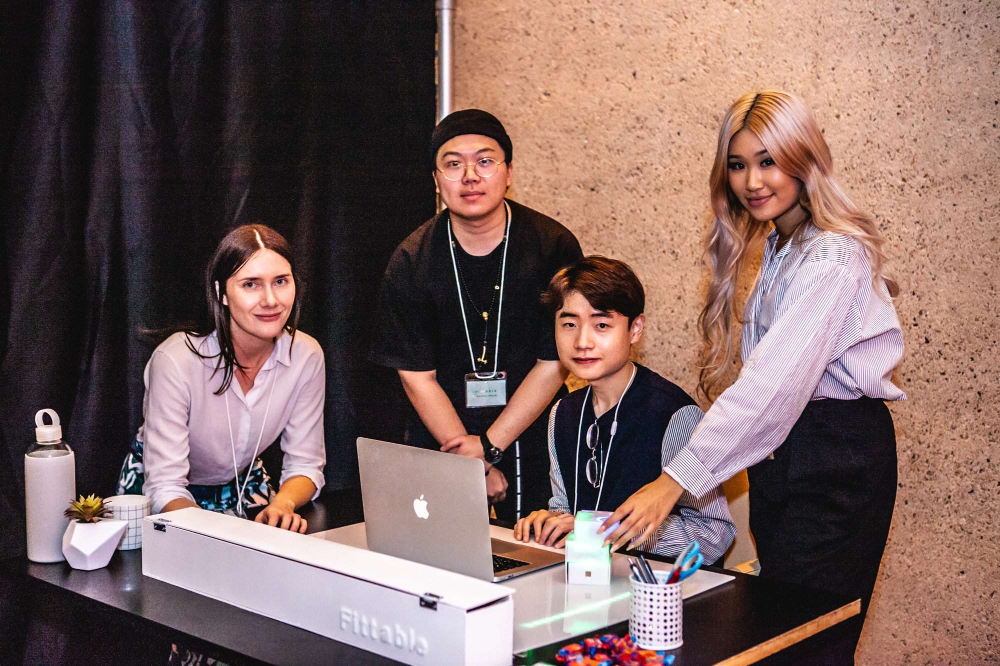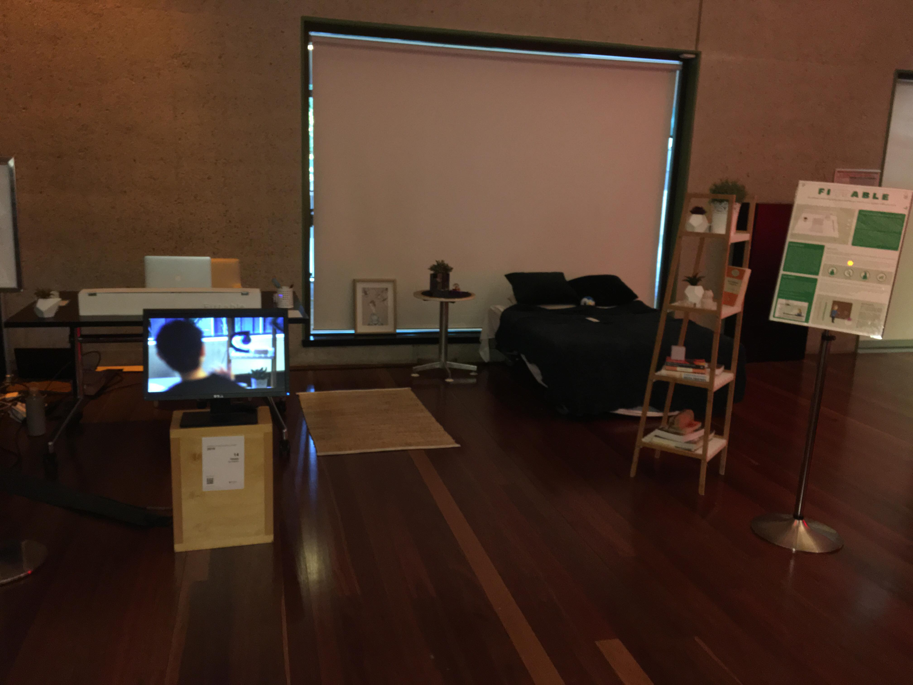
The project successfully attracted a variety of audience and encouraged them to take active breaks during the simulation. The team was able to successfully achieve our objectives, with all members of the public undertaking postural shift adjustments and active breaks throughout study sessions during demonstrations and feeling motivated or encouraged to do so. The most successful part of the project is that users purely enjoyed the interaction with the tokens. Generally, users liked the idea of placing the tokens wherever they want and how these tokens prompt them to move around.
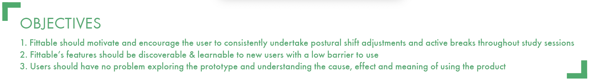Through user testing, we found that all users understood, appreciated and engaged with our concept, with an estimated 83% success rate in the area of learnability (well above our target of 60%). We could also estimate that usability to be at a similarly acceptable level. Some criterias were unable to test including efficiency and the full token system for learnability due to technical difficulties on the day due to the Wifi troubles. This limitation however did not result in negative user experience as team could explain how the functions would work. Our efforts for the course rewarded with a Distinction grade.